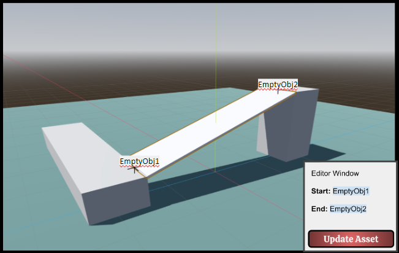

Level Stitcher

Level Stitcher is innovative because it streamlines procedural level design in Godot, and takes a modular approach to procedural assets instead of the more common one size fits all approach.
Point to Point level design is inherently innovative because it is a new way to think about when designing levels.